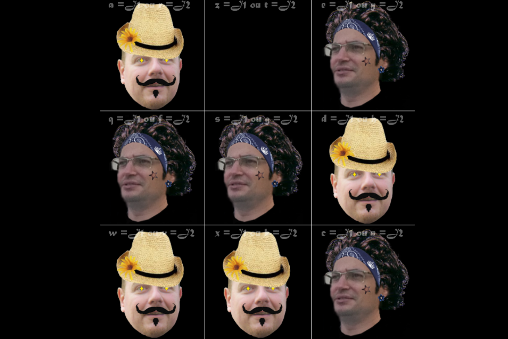
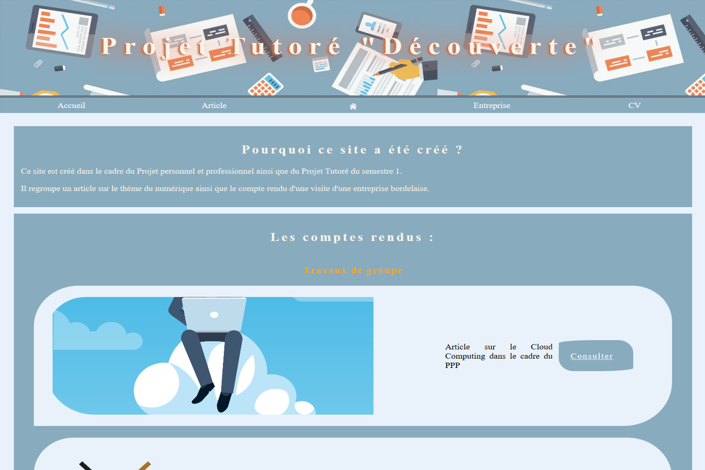

Lostsh

There is no light down here
Follow the White Rabbit.
The Matrix
Bonjour, et bienvenue en ces lieux. A présent vous êtes mes hôtes, n’ayez crainte ce site n’enregistre ni cookies ni quelque donnée personnelle que ce soit, votre navigation ne sera donc pas perturbée par d’immondes pop-up. Cependant je vous saurais gré de bien vouloir respecter les règles de bienséance de base, merci. Sur la page about vous trouverez diverses informations fort peu intéressantes à mon propos, ainsi que mon CV. Sur la page blog vous trouverez des articles de blog, que vous pourrez retrouver sur mon compte GitHub. Vous pouvez consulter mon compte Twitter.
Démineur
Projet de démineur mené en duo dans le cadre de la CPOA (Conception et Programmation Objet Avencé).

Morpion
Jeu de morpion, disponnible en ligne : Vous pouvez y jouer ici. Retrouvez aussi le dépot du projet a cette adresse.
Poker
Jeu de Poker programmé dans le cadre de l'IHM (Interface Homme Machine), c'est a dire la concepion d'interfaces utilisateur.Codé en C#.

Discothèque
Gestionnaire de musiques, programmé en C# avec les technologies de base de données OLEBD et LINQ

Site SQLI
Dans le cadre du PT1 (Projet tutoré 1). Nous avons du réaliser un site pour présenter l'entreprise que nous avons visité.
Pong
Jeu de PONG programmé dans le cadre de la POO (Programmation Orientée Objet). Amélioration personnelle : une version pour jouer en ligne.

Titre du projet
Résumé du projet

Titre du projet
Résumé du projet
Titre du projet
Résumé du projet
Titre du projet
Résumé du projet